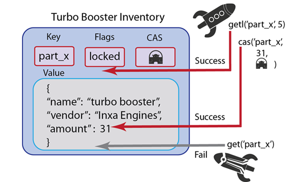

Locking items
Get-and-lock methods enable you to retrieve a value for a given key and lock that key; it thereby provides a form of pessimistic concurrency control in Couchbase Server. While a key is locked, other clients are not able to update the key, nor are they able to retrieve it.
When you perform a get-and-lock operation you provide an expiration for the lock as a parameter. The maximum amount of time a key can be locked is 30 seconds; any parameter you provide that is more than 30 seconds will be set to 30 seconds; negative numbers will be interpreted as 30 seconds also. When Couchbase Server locks a key, it sets a flag on the key indicating it is locked, it updates the CAS value for the key and returns the new CAS value. When you perform a cas operation with the new CAS value, it will release the lock.
You would want to use this method any time you want to provide a high level of assurance that a value you update is valid, or that a user can modify the value without any conflict with other users.
Going back to the spaceship example, imagine we want spaceships to be able to immediately put a repair item on hold when they arrive in the spaceship service station. This way, a player with a broken spaceship can immediately be assured that as long as they perform a getl and the repair part is in inventory, they will get that part:
Other spaceships that arrive in open repair spots afterwards cannot take it since the entire inventory is locked. In this case, it would make sense to provide separate inventories for all the different parts so that only that type of part is locked while a ship reserves a part. The spaceship that made the lock can update the inventory and release the key by using a cas update.
The following are two examples of using a get-and-lock operation in the Ruby SDK:
c.get("foo", :lock => true)
c.get("foo", "bar", :lock => 3)
In the first example, we use the standard method call of get() and include the parameter :lock => true to indicate we want to lock the when we perform the retrieve. This lock will remain on the key until we perform a cas operation on it with the correct CAS value, or the lock will expire by default in 30 seconds. In the second version of get-and-lock we explicit set the lock to a three second expiration by providing the parameter :lock => 3. If we perform a cas operation within the three seconds with the correct CAS value it will release the key; alternately the lock will expire and Couchbase Server will unlock the key in three seconds.
Object myObject = client.getAndLock("someKey", 10);
In this previous example we retrieve the value for ‘someKey’ and lock that key for ten seconds. In the next example we perform a get-and-lock operation and try to retrieve the value while it is still locked:
public static void main(String args[]) throws Exception {
List<URI> uris = new LinkedList<URI>();
uris.add(URI.create("http://localhost:8091/pools"));
CouchbaseClient client = new CouchbaseClient(uris, "default", "");
client.set("key", 0, "value").get();
client.getAndLock("key", 2);
System.out.println("Set locked key result: " + client.set("key", 0, "lockedvalue").get());
System.out.println("Get locked key result: " + client.get("key"));
Thread.sleep(3000);
System.out.println("Set unlocked key result: " + client.set("key", 0, "newvalue").get());
System.out.println("Get unlocked key result: " + client.get("key"));
client.shutdown();
}
The first attempt to set the key to ‘lockedvalue’ will output an error since the key is still locked. The attempt to output it will output the original value, which is ‘value.’ After we have the thread sleep 30 seconds we are able to set it to ‘newvalue’ since the lock has expired. When we then perform a get, it outputs the updated value, ‘newvalue.’
The other way to explicitly unlock a value using a Couchbase SDK is to perform a cas operation on the key with a valid CAS value. After Couchbase Server successfully updates the document, it will also unlock the key.
The equivalent call in the memcached protocol is get which returns the value for the key and will set a timed lock if you provide it as a parameter. For more information, see memcached protocol.
The types of errors that can occur during this operation include 1) inability to connect to a node, or 2) some error exists while attempting to format a value being retrieved. If you have a connection-level error you may need to reattempt connection, and possibly check the status of the server. If you have an error with the size of your value or formatting, you need to check the value itself, and how it is encoded and see if there are any issues that make the document incompatible with Couchbase Server.
For more information about connections and connection-level settings, see Optimizing client instances and Client-side timeouts.